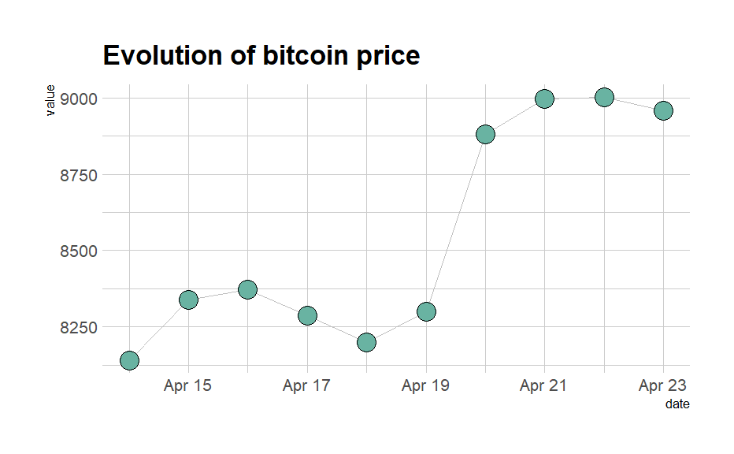
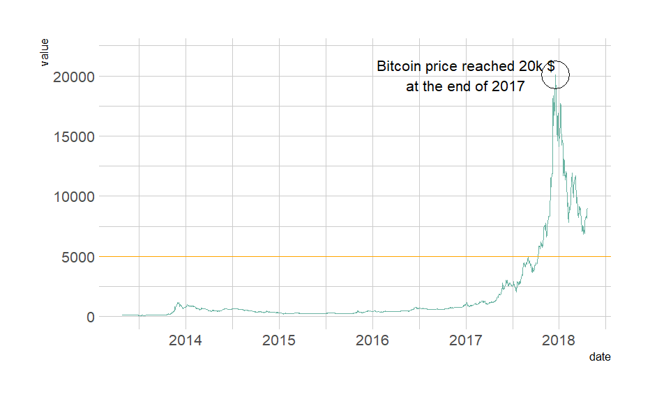

Collect your own time series data and import into R (e.g. you can use quantmod to collect stock data)


2. Examine class of time series object and variables
3. Generate time series charts using tsstudio1.R and dygraphs1.R
a. Analyze time series variables
i. Trend
It refers to the movement of data over time. It is the component of a time series that represents variations of low frequency in a time series, the high and medium frequency fluctuations having been filtered out.
ii. Stationarity
Stationarity means that the statistical properties of a time series (or rather the process generating it) do not change over time. Stationarity is important because many useful analytical tools and statistical tests and models rely on it.
iii. pdq
A time series is an autoregressive integrated moving average model of order p, d, q, ARIMA(p,d,q), if ∇ d x t is an autoregressive moving average of order p,q, ARMA(p,q). That is, if the series is differenced times, and it then follows an ARMA(p,q) process, then it is an ARIMA(p,d,q) series.
Source Code
---title: "Assignment 9"author: "Vikrant Sagar R"date: "2022-11-22"categories: [Code, R, Plots, Assignment]draft: falseformat: html: code-fold: true code-tools: trueexecute: echo: false---## **TIME SERIES DATA**#### 1. Collect your own time series data and import into R (e.g. you can use quantmod to collect stock data)```{r}#First Plot# library(ggplot2)# # Load dataset from github# data <- read.table("https://raw.githubusercontent.com/holtzy/data_to_viz/master/Example_dataset/3_TwoNumOrdered.csv", header=T)# data$date <- as.Date(data$date)# # # plot# data %>% # ggplot( aes(x=date, y=value)) +# geom_line(color="#69b3a2") +# ylim(0,22000) +# annotate(geom="text", x=as.Date("2017-01-01"), y=20089, # label="Bitcoin price reached 20k $\nat the end of 2017") +# annotate(geom="point", x=as.Date("2017-12-17"), y=20089, size=10, shape=21, fill="transparent") +# geom_hline(yintercept=5000, color="orange", size=.5) +# theme_ipsum()# # #Second Plot# # Load dataset from github# data <- read.table("https://raw.githubusercontent.com/holtzy/data_to_viz/master/Example_dataset/3_TwoNumOrdered.csv", header=T)# data$date <- as.Date(data$date)# # # Plot# data %>%# tail(10) %>%# ggplot( aes(x=date, y=value)) +# geom_line( color="grey") +# geom_point(shape=21, color="black", fill="#69b3a2", size=6) +# theme_ipsum() +# ggtitle("Evolution of bitcoin price")```#### 2. Examine class of time series object and variables```{r}# class(data$date)# str(data)# summary(data)```#### 3. Generate time series charts using tsstudio1.R and dygraphs1.R```{r}# Plotting time series data using TSstudio#install.packages("TSstudio")# library(TSstudio)# quantmod::getSymbols("CLOV", src="yahoo")# ts_plot(CLOV$CLOV.Adjusted, # title = "Clover Health Insurance Stock prices",# Ytitle = "")# class(CLOV)# # Plotting time series data using dygraph# lapply(c("quantmod", "tidyverse","dygraphs"), require, character.only = TRUE)#install.packages("dygraphs")# library(dygraphs)# par(family="Palatino")# quantmod::getSymbols("CLOV", src="yahoo")# class(CLOV)# m = tail(CLOV, n=30)# m =m[,1:(ncol(m)-2)] # drop last two columns # names(m)<-c('Open', 'High', 'Low', 'Close') # rename columns for plotting# path <- getwd()# dygraph(m, main = "Clover Health Insurance Stock Prices (Candlestick Chart)") |> # dyCandlestickGroup(c('Open', 'High', 'Low', 'Close')) |> # dyCandlestick() |> # dyLegend(show = "always", hideOnMouseOut = T) |> # dyCSS("dygraph.css")```#### a. Analyze time series variables#### i. TrendIt refers to the movement of data over time. It is the component of a time series that represents variations of low frequency in a time series, the high and medium frequency fluctuations having been filtered out.#### ii. StationarityStationarity means that the statistical properties of a time series (or rather the process generating it) do not change over time. Stationarity is important because many useful analytical tools and statistical tests and models rely on it.**iii. pdq**A time series is an autoregressive integrated moving average model of order p, d, q, ARIMA(p,d,q), if ∇ d x t is an autoregressive moving average of order p,q, ARMA(p,q). That is, if the series is differenced times, and it then follows an ARMA(p,q) process, then it is an ARIMA(p,d,q) series.